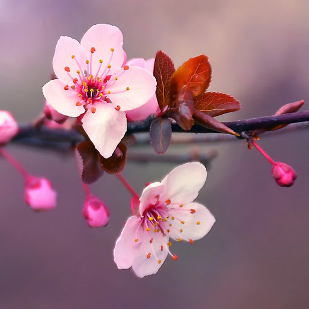

<h1>Cherry Blossom Facts</h1>
<h2>Blossom with knowledge</h2>
   <p>Look at this!</p>
    
<br>
   <label> It's so pretty!</label>
   <h3>Click <a href="https://www.google.com/search?q=cherry+blossoms&rlz=1C5CHFA_enUS860US860&source=lnms&tbm=isch&sa=X&ved=2ahUKEwiw1d_lsvj8AhX2JTQIHVwyAzMQ_AUoAXoECAEQAw&biw=1200&bih=618&dpr=1"> here </a> to view more Cherry Blossoms.</h3>
   <h4>Cherry Blossoms grow:</h4>
   <ul>
      <li>In Japan.</li>
      <li>In my backyard.</li>
      <li>Slowly, oftentimes.</li>
  </ul>
  <figure>
      
      <figcaption> So pretty! </figcaption>
  </figure>
   <h3>Why you should love Cherry Blossom trees</h4>
   <ol>
      <li>They are the <strong>best</strong>.</li>
      <li>They are pink.</li>
      <li>I like them.</li>
   </ol>
  <figure>
   
   <footer>
    <EM> <strong>Stunning!!</strong></EM>
    </footer>
   <strong><em>Mesmerizing!!</em> </strong>
  </figure>
  <fieldset>
  <legend> Do you like cherry blossoms? </legend>
    <input type="checkbox"  name="answer" > Yes <br>
    <input type="checkbox" name="answer2"> No <br>
</fieldset>
<fieldset>
  <legend> Have you ever seen a japanese cherry tree? </legend>
     <input type="radio"  name="answer" > Yes <br>
    <input type="radio" name="answer"> No <br>
    <input type="radio"  name="answer" > I don't know <br>
</fieldset>
  <fieldset>
  <legend> How do cherry blossoms make you feel? </legend>
    <input type="checkbox"  name="answer" > Good  <br>
    <input type="checkbox"  name="answer" > Bad <br>
</fieldset>
  <form action="cherry">
    <br>
    Share your favorite tree with us! <input type="textbox" name="treefav" placeholder="Enter URL">
  <button> Submit </button>
